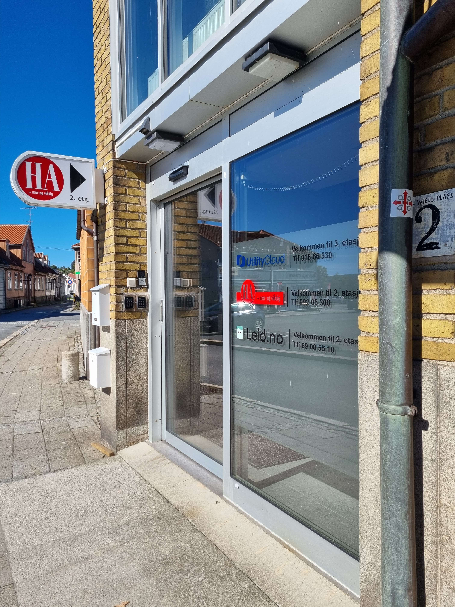
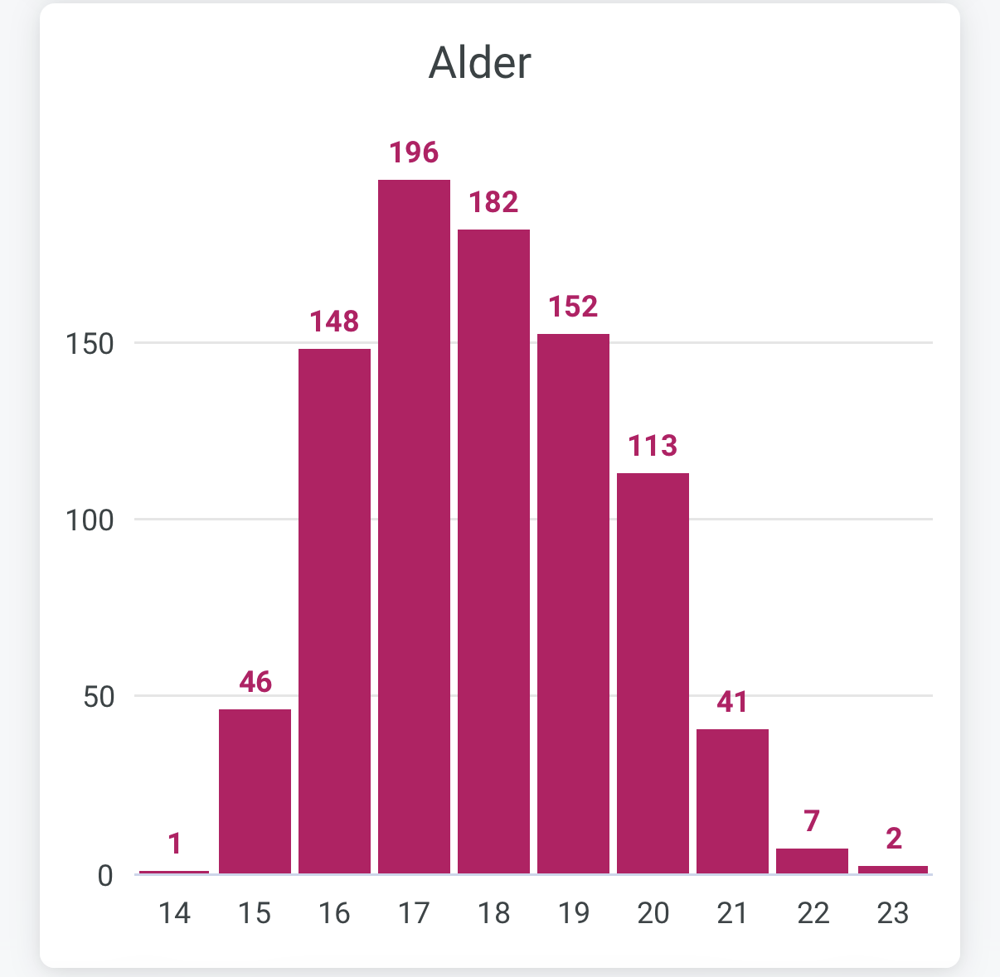
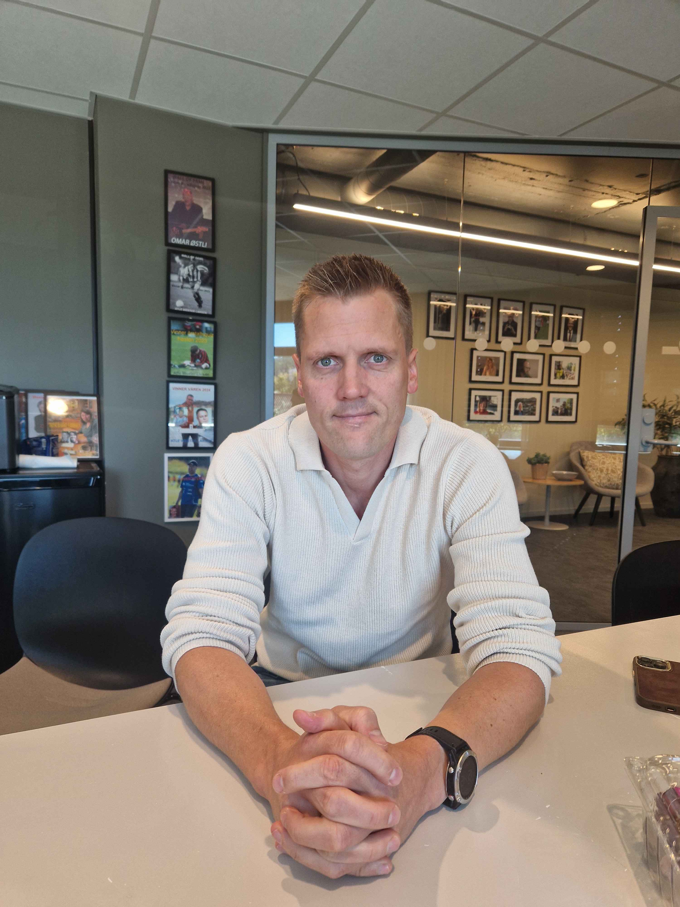

Ordningen ble først lansert for unge mellom 15 og 20 år, men er nå utvidet til og med 23 år. Målet er å senke terskelen for at unge skal lese redaktørstyrte nyheter.
Amedia opplyser at mange unge har registrert seg for gratis tilgang. Samtidig er det viktig å skille mellom å registrere seg og faktisk lese avisen – to ting som ikke nødvendigvis henger sammen.

Hvordan fungerer ordningen i Halden Arbeiderblad?
Halden Arbeiderblad (HA) har i dag 798 aktive gratisabonnenter. Likevel er det bare rundt 100 unge som er innom avisen på en vanlig dag. Dette viser at ordningen når mange, men at bruken varierer betydelig.
De mest aktive leserne er særlig 17–18‑åringer, mens færre 15‑åringer bruker tilbudet. Bruken faller også noe i alderen 19–21 år.

Hva får unge til å lese?
Ulekleiv sier at den største utfordringen ikke er å få unge til å registrere seg, men å lage saker de faktisk er interessert i.
«Den største utfordringen er ikke registreringen, men å lage saker unge faktisk er interessert i.» – Ulekleiv
Breaking news, kriminalitet og ulykker er mest populært. Deretter kommer saker om næringslivet – som nye butikker, restauranter og lokale tilbud. Dette reiser spørsmålet: Klikker unge fordi de er mer opptatt av lokalsamfunnet, eller fordi de dramatiske sakene fanger oppmerksomheten?
Har gratis tilgang gjort unge mer engasjerte?
Amedia-tallene viser at mange unge har begynt å bruke avisene etter at de ble gratis. Intervjuet med HA bekrefter også at avisen har en betydelig gruppe unge brukere. Gratis tilgang ser dermed ut til å ha senket terskelen for å lese lokalnyheter.
Hvorfor mener avisen at dette er viktig?
Ulekleiv peker på at unge bør ha et forhold til redaktørstyrte medier. Han advarer mot at innholdet på sosiale medier kan være misvisende, algoritmestyrt og mer ekstremt.
«Før lå lokalavisen på kjøkkenbordet. Nå må avisene finne en måte å bli synlige på ungdommens digitale kjøkkenbord.» – Ulekleiv

Veien videre
Amedia utvider nå tilbudet ytterligere. Ulekleiv mener nøkkelen er å etablere vaner: Hvis unge blir vant til å bruke lokalavisen nå, kan de bli fremtidige abonnenter.